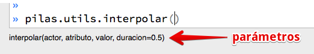

Interpolaciones
Las interpolaciones nos permiten lograr movimientos de los actores de manera sencilla.
Por ejemplo, tradicionalmente si quisiéramos cambiar posición de un actor en pantalla podemos usar estas sentencias:
actor.x = 10
actor.x = 20
actor.x = 30
etc ...
una forma de lograr lo mismo con pilas es asignarle todos los valores en forma de lista:
actor.x = range(10, 100, 10)
o lo que es lo mismo:
actor.x = [10, 20, 30, 40, 50 ... etc.
Y a estas interpolaciones, también le puedes decir cuantos segundos puede demorar. Por ejemplo, para dar un giro completo de 360 grados en 10 segundos puedes hacer algo como:
actor.rotacion = [360], 10
de hecho, puede que te resulte mas conveniente tener mas control sobre la interpolación, así que puedes usar esta forma:
pilas.utils.interpolar(actor, 'x', 100)
donde el valor inicial será la posición x del actor y el valor
final será 100.
La función interpolar, como mencioné antes, te da mas
control sobre la interpolación, porque admite otros parámetros
de ajuste como los siguientes:

Por ejemplo, si queremos que un personaje dé un giro completo de 360 grados en 10 segundos podemos hacer algo así:
actor.rotacion = 0
pilas.utils.interpolar(actor, 'rotacion', 360, duracion=10)
Girando un actor
Esta herramienta se puede aplicar a muchas situaciones distintas, por ejemplo si queremos hacer girar un personaje podemos hacer algo como:
actor.rotacion = 0
pilas.utils.interpolar(actor, 'rotacion', 360, duracion=5)
con lo que estaríamos diciendo al personaje que dé un
giro completo (de 0 a 360 grados) en 5 segundos.
También existe un argumento delay para demorar el
inicio de la interpolación.
Escalando un actor
De manera similar a lo que hicimos anteriormente, podemos
aplicarla a la propiedad escala una nueva
interpolación:
pilas.utils.interpolar(actor, 'escala', 2, duracion=5)
esto duplicará el tamaño del actor en 5 segundos.
¿Y mas simple?, bueno, como hicimos antes:
actor.escala = [2]
Interpolaciones en cadena
Si queremos que una interpolación pase por distintos valores podemos hacer algo como esto:
actor.x = [300, 0, 300], 3
lo que llevará al actor de su posición x actual, a 300,
luego a 0 y por último de nuevo a 300 en un segundo.
En total, ha consumido 3 segundos por cada movimiento, es decir 9 segundos en total.